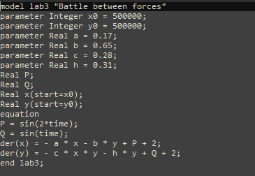

Изучить модели боевых действий Ланчестера. Применить их на практике для решения задания лабораторной работы.
Рассмотривается три случая ведения боевых действий:
Боевые действия между регулярными войсками
Боевые действия с участием регулярных войск и партизанских отрядов
Боевые действия между партизанскими отрядами
Между страной Х и страной У идет война. Численность состава войск исчисляется от начала войны, и являются временными функциями x(t) и y(t). В начальный момент времени страна Х имеет армию численностью 500000 человек, а в распоряжении страны У армия численностью в 500000 человек. Для упрощения модели считаем, что коэффициенты a, b, c, h постоянны. Также считаем P(t) и Q(t) непрерывными функциями.
Постройте графики изменения численности войск армии Х и армии У для следующих случаев:
$$ {dx\over {dt}} = -0.45x(t)-0.86y(t)+sin(t+1) $$ $$ {dy\over {dt}} = -0.49x(t)-0.73y(t)+cos(t+2) $$
$$ {dx\over {dt}} = -0.17x(t)-0.65y(t)+sin(2t) + 2 $$ $$ {dy\over {dt}} = -0.31x(t)y(t)-0.28y(t)+cos(t) + 2 $$
Рассмотрим первый случай. Численность регулярных войск определяется тремя факторами:
В этом случае модель боевых действий между регулярными войсками описывается следующим образом:
$$ {dx\over {dt}} = -a(t)x(t)-b(t)y(t)+P(t) $$ $$ {dy\over {dt}} = -c(t)x(t)-h(t)y(t)+Q(t) $$
В первом пункте нами рассматривается как раз такая модель. Она является доработанной моделью Ланчестера, так его изначальная модель учитывала лишь члены b(t)y(t) и c(t)x(t), то есть, на потери за промежуток времени влияли лишь численность армий и “эффективность оружия” (коэффициенты b(t) и c(t)).
$$ {dx\over {dt}} = -ax(t)-by(t)+P(t) $$ $$ {dy\over {dt}} = -cx(t)-hy(t)+Q(t) $$
Именно эти уравнения [3] и будут решать наши программы для выполнения первой части задания. В конце мы получим график кривой в декартовых координатах, где по оси ox будет отображаться численность армии государства X, по оси oy будет отображаться соответствующая численность армии Y. По тому, с какой осью пересечётся график, можно определить исход войны. Если ось ox будет пересечена в положительных значениях, победа будет на стороне армии государства X (так как при таком раскладе численность армии Y достигла нуля при положительном значении численности армии X). Аналогичная ситуация для оси oy и победы армии государства Y.
Для второй части задания, то есть, для моделирования боевых действий между регулярной армией и партизанской армией, необходимо внести поправки в предыдущую модель. Считается, что темп потерь партизан, проводящих свои операции в разных местах на некоторой известной территории, пропорционален не только численности армейских соединений, но и численности самих партизан.
$$ {dx\over {dt}} = -a(t)x(t)-b(t)y(t)+P(t) $$ $$ {dy\over {dt}} = -c(t)x(t)y(t)-h(t)y(t)+Q(t) $$
Коэффициенты a, b, c и h всё так же будут положительными десятичными числами:
$$ {dx\over {dt}} = -ax(t)-by(t)+P(t) $$ $$ {dy\over {dt}} = -cx(t)y(t)-hy(t)+Q(t) $$
Случай сражения регулярная армия против регулярной армии.
Случай сражения регулярной армии против партизан.  # Результаты работы кода на
Julia
# Результаты работы кода на
Julia

Случай сражения регулярная армия против регулярной армии. 
Случай сражения регулярной армии против партизан. 


Графики для всех случаев в OpenModelica и в Julia индентичны в своей сути. Единственное отличие заключается в различии масштаба для графиков характеризующие боевые действия между регулярной армией и партизанами.
Были изучены модели боевых действий Ланкастера. В результате были получены графики для двух случаев боевых действий.
[1] Документация по Julia: https://docs.julialang.org/en/v1/
[2] Документация по OpenModelica: https://openmodelica.org/
[3] Решение дифференциальных уравнений: https://www.wolframalpha.com/
[4] Законы Ланчестера: https://ru.wikipedia.org/wiki/%D0%97%D0%B0%D0%BA%D0%BE%D0%BD%D1%8B_%D0%9E%D1%81%D0%B8%D0%BF%D0%BE%D0%B2%D0%B0_%E2%80%94_%D0%9B%D0%B0%D0%BD%D1%87%D0%B5%D1%81%D1%82%D0%B5%D1%80%D0%B0